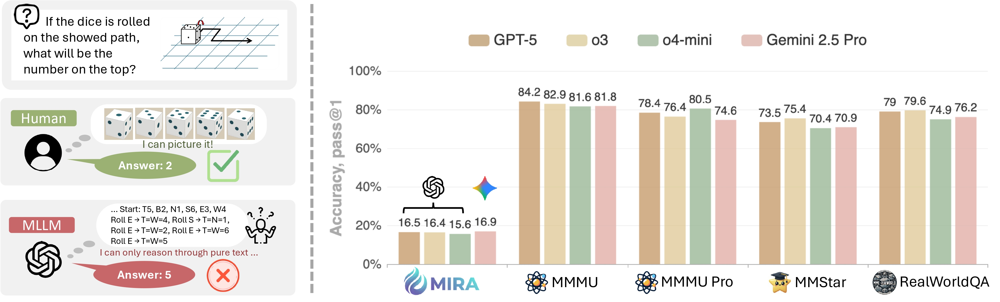

The MIRA benchmark is highly challenging for all Multimodal Large Language Models (MLLMs), with even the most advanced closed-source models achieving an overall accuracy of no more than 20% under direct input (D). Text-based Chain-of-Thought (T) has limited effect, or even a negative impact on strong models like Gemini 2.5 Pro and o3. In contrast, providing human-annotated intermediate visual cues (V) significantly boosts model performance, yielding an average relative gain of 33.7%, highlighting the critical role of visual information in complex reasoning.
Expanding the model's decoding search space (e.g., using Pass@k) brings only limited performance gains on the MIRA task, with improvements quickly saturating beyond Pass@4. For stronger models, the benefits of Pass@k or majority voting are minimal, indicating that their failures stem from a fundamental lack of capability rather than mere random reasoning errors.
Replacing the generic Text-CoT prompt with task-specific prompts to better simulate the guidance provided by Visual-CoT yields consistent but relatively marginal performance improvements (an average gain of about 1.4% to 1.5%). This limited improvement, in contrast to the substantial gains brought by Visual-CoT, highlights the inherent limitations of purely textual guidance, which struggles to adequately capture the visual information required for certain reasoning steps.
@article{zhou2025mira,
title={When Visualizing is the First Step to Reasoning: MIRA, a Benchmark for Visual Chain-of-Thought},
author={Zhou, Yiyang and Tu, Haoqin and Wang, Zijun and Wang, Zeyu and Muennighoff, Niklas and Nie, Fan and Choi, Yejin and Zou, James and Deng, Chaorui and Yan, Shen and Fan, Haoqi and Xie, Cihang and Yao, Huaxiu and Ye, Qinghao},
journal={arXiv preprint arXiv:2511.xxxx},
year={2025},
url={https://mira-benchmark.github.io/}
}